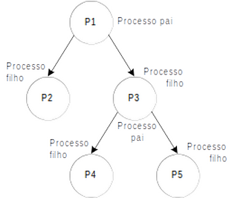

13 - Processos¶
A chamada fork¶
A chamada fork cria um clone do processo atual e retorna duas vezes: uma vez no processo original (pai) e uma vez no processo novo (filho). Cada processo segue executando o programa linha a linha, porém cada um possui áreas de memória separadas. Ou seja, mudar uma variável no processo pai não muda seu valor no filho (e vice-versa). Todo processo é identificado por um número chamado de pid.
Tip
O pid é incrementado conforme novos processos vão sendo iniciados.
Considerando o código abaixo (arquivo exemplo1-fork.c), responda.
pid_t pai, filho;
int variavel = 5;
filho = fork();
if (filho == 0) {
// processo filho aqui
pai = getppid();
filho = getpid();
variavel *= 2;
printf("eu sou o processo filho %d, meu pai é %d\nvariavel %d\n",
filho, pai, variavel);
} else {
// processo pai aqui!
pai = getpid();
printf("eu sou o processo pai %d, meu filho é %d\nvariavel %d\n",
pai, filho, variavel);
}
return 0;
Responda os primeiros dois exercícios sem rodar o programa!
Exercise
Qual seria o valor de variavel no print do pai? e do filho?
Answer
No pai variavel vale 5.
No filho variavel vale 10.
Exercise
Esse valor mudaria conforme o pai (ou o filho) executam primeiro?
Answer
Não, isto mudaria apenas a ordem dos textos na tela. Uma vez realizado o fork, passamos a ter dois processos independentes em memória e execução.
Example
Compile e execute o programa acima. As suas respostas estão corretas?
$ gcc -Og -Wall -g exemplo1-fork.c -o exemplo1-fork
$ ./exemplo1-fork
Example
Em um arquivo novo .c criado do zero, faça um programa que cria 8 processos filhos (numerados de 1 a 8) e faz cada um imprimir na tela seu seu identificador. O processo pai deve imprimir 0, enquanto o primeiro filho imprime 1, o segundo 2 e assim em diante. A saída de seu programa deverá seguir o modelo abaixo:
Eu sou o processo pai, pid=%d, meu id do programa é %d\n
Eu sou um processo filho, pid=%d, ppid=%d, meu id do programa é %d\n
A primeira linha só deve ser mostrada uma vez pelo processo pai. Para verificar que seu programa funciona corretamente não se esqueça de contar quantos printf foram feitos. Se houver mais que 9 houve algum problema na sua solução.
Exercise
O programa abaixo termina? Explique sua resposta.
int rodando = 1;
pid_t filho;
filho = fork();
if (filho == 0) {
printf("Acabei filho\n");
rodando = 0;
} else {
while (rodando) {
printf("Esperando o filho acabar!\n");
sleep(1);
}
}
return 0;
Answer
Não.
Uma vez realizado o fork, passamos a ter dois processo independentes em memória e execução.
Como o código rodando = 0 é executado apenas no processo filho, esta ação não tem efeito no processo pai, que é onde será executado o while.
Se ficou com dúvidas por que o bloco verdadeiro do if é executado apenas no filho e o bloco falso apenas no pai, peça ajuda ao professor!
As chamadas wait/waitpid¶
Um processo pode esperar seus filhos acabarem usando uma das chamadas wait ou waitpid. Esta chamada retorna um código numérico que representa a saída do programa (o que foi retornado pelo main) e um conjunto de flags que indica se houve término anormal. O código errado do último exercício tentava simular estas chamadas usando uma variável rodando e checando seu valor. A maneira correta de esperar um processo filho terminar é usando wait ou waitpid.
Exercise
Pesquise como usar wait no manual. Escreva abaixo a assinatura da função. Qual é o valor retornado? O que é retornado na varíavel passada como ponteiro?
Answer
Aqui está a saída do man wait. Execute em seu terminal para ver a saída completa!
$ man 2 wait
WAIT(2) Linux Programmer's Manual WAIT(2)
NAME
wait, waitpid, waitid - wait for process to change state
SYNOPSIS
#include <sys/types.h>
#include <sys/wait.h>
pid_t wait(int *wstatus);
pid_t waitpid(pid_t pid, int *wstatus, int options);
int waitid(idtype_t idtype, id_t id, siginfo_t *infop, int options);
/* This is the glibc and POSIX interface; see
NOTES for information on the raw system call. */
Feature Test Macro Requirements for glibc (see feature_test_macros(7)):
Example
Modifique o programa exemplo2-errado.c para usar wait para esperar o processo filho terminar. Após o filho terminar o pai deve mostrar uma mensagem na tela indicando este fato. Salve este arquivo como exemplo2-certo.c
Exercise
É possível obter o valor retornado pelo main de um processo usando wait. Pesquise no manual como fazê-lo.
Dica: procure por exit status.
Answer
Confira com o professor!
Example
Modifique o exemplo2-certo.c para que o filho retorne 2 e modifique o pai para que ele obtenha esta informação a partir dos valores retornados pelo wait. Você precisará ler o manual de wait para fazer este exercício.
Exercícios Extras¶
Estes exercícios não são para entrega. Utilize esta lista para praticar os assuntos aprendidos na aula.
Exercise
Faça um programa que lê um número inteiro. Em dois processos filhos, deve ser calculado e impresso o dobro e a metade desse número.
Exercise
Faça um programa em que o processo pai lê dois valores inteiros (n1 e n2). Em seguida, são criados 4 processos filhos. Com os valores lidos pelo pai, os filhos devem calcular e imprimir em paralelo as seguintes operações.
n1 – n2
n1 + n2
n1 / n2
n1 * n2
Exercise
Faça um programa que crie um grupo de processos conforme a hierarquia apresentado abaixo, cada filho deve imprimir o seu PID e o PID do processo que o criou.

Exercise
Faça um programa que lê um número inteiro indicando o número de filhos que o pai terá que criar. Ou seja, todos os processos filhos são do mesmo pai. Crie o número de processos solicitado.
Cada filho deve:
- Esperar por 5 segundos assim que for criado
- Imprimir:
- O seu número de ordem de criação
- O seu PID
- O PID do processo pai.
- Sair retornando
0.
Super importante!
Caso ainda não tenha feito, reescreva os exercícios anteriores para que o pai só seja finalizado quando todos os seus filhos já tenham terminado sua execução.
Exercise
Dado um vetor A de n elementos e uma variável c, faça um programa paralelo para determinar a quantidade de elementos de A que são menores que c.
Cada filho deve imprimir a quantidade de elementos de A que são menores que c.
Obs:
- Você pode escolher o tipo do vetor (int, char, long, short)
- Leia o
n, aloque o vetor dinamicamente e então leia todos os elementos do vetor - Suponha que
né múltiplo do número de filhos criados pelo processo pai - Você pode escolher o número de filhos criados pelo pai.